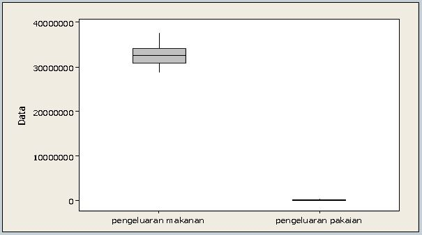
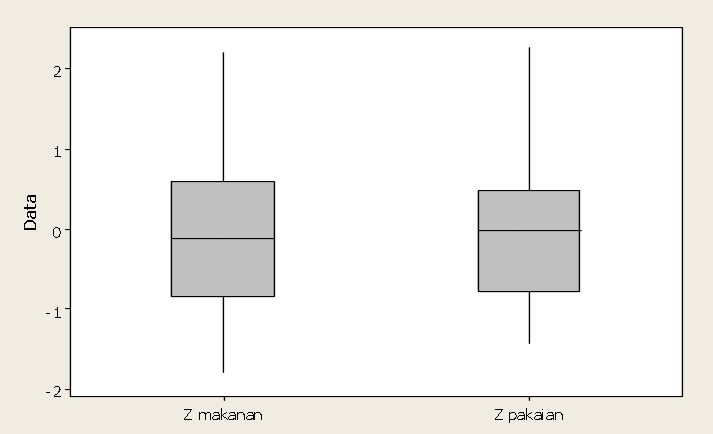

Penelitian yang menggunakan data kuantitatif biasanya melibatkan lebih dari satu variabel.
Beberapa contoh analisis yang dilakukan pada penelitian data kuantitatif diantaranya, yaitu membandingkan kesimetrisan antar variabel secara visual dan membandingkan posisi suatu pengamatan dibandingkan pengamatan lain dari kelompok data yang berbeda.
Proses menstandarkan data terkadang dibutuhkan bagi penelitian yang menggunakan varaibel kuantitatif.
Dua variabel yang ingin dibandingkan kesimetrisannya akan sulit untuk dibandingkan dengan variabel yang memiliki satuan yang berbeda. Standarisasi data dapat menjadi solusi bagi masalah perbedaan satuan antar variabel.
Tujuan Standarisasi data adalah:
Standarisasi data pada prinsipnya adalah mengubah nilai data asli menjadi bentuk z, yaitu data yang berdistribusi normal standar.
Adapun formula untuk melakukan standarisasi data, adalah:
Perbandingan Nilai Pengamatan dengan Z Score
Salah satu manfaat z score adalah bisa digunakan untuk membandingkan posisi suatu pengamatan dibandingkan pengamatan lain dari kelompok yang berbeda.
Contoh:
Amir kelas 2 A mendapat nilai 7 untuk UTS matkul Statistik Matematik, sedangkan Roni kelas 2 L mendapat nilai 9 untuk matkul tersebut. (Dosen Statistik Matematika untuk kedua kelas tsb berbeda)
Apakah posisi nilai UTS matkul Roni lebih baik dari Amir??
Untuk membandingkan posisi pengamatan mana yang lebih baik dikelompoknya dapat dilakukan secara sederhana dengan menghitung z score dari pengamatan yang dibandingkan. z score yang lebih besar memiliki arti bahwa pengamatan tersebut memiliki posisi yang lebih baik di kelompoknya.
Perbandingan Kesimetrisan Data antar Variabel Secara Visual
Dalam melakukan perbandingan kesimeterisan antar variabel secara visual, perlu diperhatikan satuan dari tiap variabel.
Satuan yang berbeda antar variabel bisa menyulitkan pengambilan kesimpulan dalam membandingkan pola data antar variabel secara visual.
Jika peneliti ingin membandingkan kesimetrisan data antara harga mobil dengan harga motor secara visual, maka gambar yang menunjukan kesimetrisan data harga motor tidak akan terlihat jika disandingkan dengan gambar yang menunjukan kesimetrisan harga mobil. Dengan melakukan standarisasi data maka masalah perbedaan satuan dapat diatasi.
Contoh
Tentukan variabel yang lebih simetris
Berikut adalah boxplot variabel pengeluaran makanan per tahun dan pengeluaran untuk pembelian pakaian dari 20 responden yang dipilih secara acak.
Gambar kedua boxplot sulit untuk disimpulkan variabel apa yang lebih simetris. Oleh karena itu dilakukan standarisasi data untuk kedua variabel tersebut. Berikut adalah hasil standarisasi data kedua variabel.
Gambar menunjukan dengan jelas bahwa data pengeluaran makanan lebih simetris dibandingkan dengan data pengeluaran untuk pakaian.